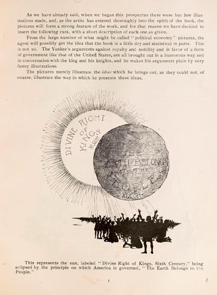

|  |
As we have already said, when we began this prospectus there were
but few illustrations made, and, as the artist has entered
thoroughly into the spirit of the book, the pictures will form a
strong feature of the work, and for that reason we have decided
to insert the following cuts, with a short description of each
one as given. From the large number of what might be called "political economy" pictures, the agent will possibly get the idea that the book is a little dry and statistical in parts. This is not so. The Yankee's arguments against royalty and nobility and in favor of a form of government like that of the United States, are all brought out in a humorous way and in conversation with the king and his knights, and he makes his aruuments plain by very funny illustrations. The pictures merely illustrate the ideas which he brings out, as they could not, of course, illustrate the way in which he presents these ideas. This represents the sun, labeled "Divine Right of Kings, Sixth Century," being eclipsed by the principle on which America in governed, "The Earth Belongs to the People." |